FDO 2026 Poster Demo
Verifiable Agent Execution
Minimal governance infrastructure for AI agents, connecting FAIR Digital Objects, verifiable digital objects, and auditable execution evidence.
Architecture
FAIR Digital Objects -> Verifiable Digital Objects -> Agent Governance Stack
Demo
Runnable local pipeline with evidence JSON and a CrewAI integration example.
Research Focus
Identity -> Execution -> Trace -> Audit -> Governance
Architecture

Pipeline
- FAIR Digital Objects
- -> Verifiable Digital Objects
- -> Agent Governance Stack
- -> Verifiable Digital Evidence
Demo
Run locally:
bash scripts/run_demo.shCrewAI example:
bash scripts/setup_framework_venv.sh
.venv/bin/python crew/crew_demo.pyLive evidence output:
artifacts/demo_output/evidence/example_audit.jsonCore Projects
Persona Object Protocol
Portable persona layer for agent identity and permissions.
ARO Audit
Evidence generation and audit records for agent execution.
Token Governor
Runtime token cost and policy control for AI agents.
Verifiable Agent Demo
End-to-end governance pipeline demo for auditable agent execution.
Research Context
This work explores governance infrastructure for autonomous AI agents:
Identity -> Execution -> Trace -> Audit -> Governance